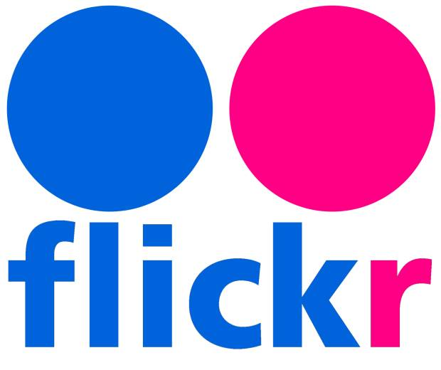

<!DOCTYPE html>
<html>
<head>

    <!-- include CAPH 3.1.0 default package -->
    <link href="lib/caph/3.1.0/caph.min.css" rel="stylesheet" type="text/stylesheet">

    <!-- include jQuery file (you can use jQuery in your environment) -->
    <script src="lib/caph/3.1.0/bower_components/jquery/dist/jquery.min.js" type="text/javascript"></script>

    <!-- include the CAPH Package for jquery -->
    <script src="lib/caph/3.1.0/caph-jquery.min.js" type="text/javascript"></script>
    
	<!--     BOOTSTRAP -->
    <!-- Latest compiled and minified CSS -->
	<link rel="stylesheet" href="https://maxcdn.bootstrapcdn.com/bootstrap/3.3.7/css/bootstrap.min.css">
	<!-- Latest compiled JavaScript -->
	<script src="https://maxcdn.bootstrapcdn.com/bootstrap/3.3.7/js/bootstrap.min.js"></script>
	    
	<!--     OUR JS's -->
	<script type="text/javascript" src="./js/keycodes.js"></script>
	<script type="text/javascript" src="./js/keyHandler.js"></script>
	<script type="text/javascript" src="./js/pageManager.js"></script>
	<script type="text/javascript" src="./js/gridManager.js"></script>
	<script type="text/javascript" src="./js/fileSystemManager.js"></script>

	<!--     OUR CSS'S -->
	<link rel="stylesheet" type="text/css" href="./css/main.css"></link>
	

	<script>
			
	</script>
</head>
<body>
<div class="container-fluid mainContainer">
	<div class="container-fluid flickrForm">
  	</div>
	<!-- <div class="container-fluid firstPage">
		<div class="row-lg-4 logoHeader"> 
			
		</div>
  		<div class="column">
		    <div class="row-lg-4 text-center" >
		    	
		    </div>
		    
		    <div class="row-lg-4 text-center" >
		    	
		    </div>
		    <div class="row-lg-4 text-center" >
		    	
		    </div>
	  	</div> -->	
  </div> 
</div>
</body>
</html>
